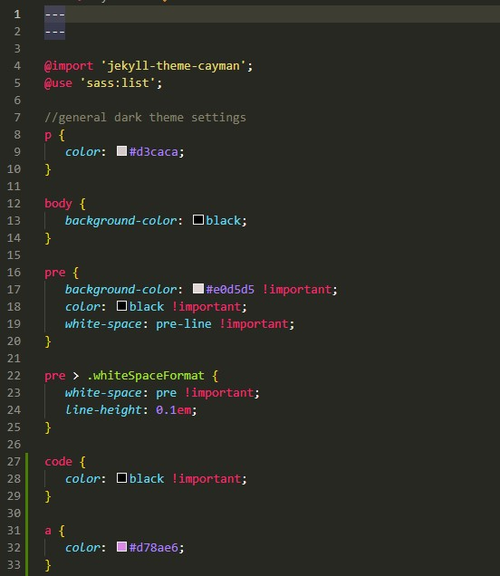
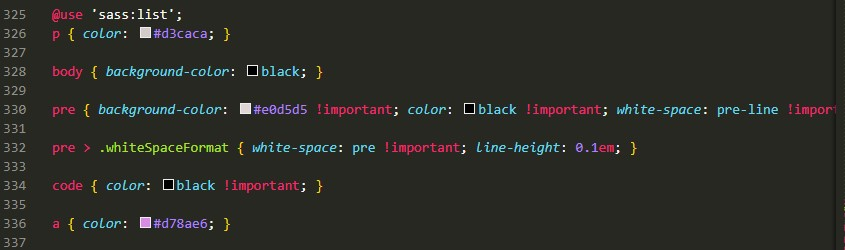

A easy way to write SASS and have it preprocessed into CSS is by using a Jekyll powered website, such as GitHub pages or Fastpages.
The first step is to clone a GitHub pages repo, such as this one.
Within the repository, head over to assets/css/, and open style.scss.
The file looks something like this:
This is where you can create your SASS code.
To see your CSS-translated SASS code, head over to _site/assets/css/style.css
Note: You will need to run bundle exec jekyll serve before
the _site directory appears.
The first few hundred lines are used to style Github's theme. Make sure to scroll to the very bottom to see the SASS code that you wrote, which is in the form of CSS.
